Simplify Complex Rational Expressions
Complex fractions are fractions in which the numerator or denominator contains a fraction. In Chapter 1 we simplified complex fractions like these:
In this section we will simplify complex rational expressions, which are rational expressions with rational expressions in the numerator or denominator.
Here are a few complex rational expressions:
Remember, we always exclude values that would make any denominator zero.
We will use two methods to simplify complex rational expressions.
Simplify a Complex Rational Expression by Writing it as Division
We have already seen this complex rational expression earlier in this chapter.
We noted that fraction bars tell us to divide, so rewrote it as the division problem
Then we multiplied the first rational expression by the reciprocal of the second, just like we do when we divide two fractions.
This is one method to simplify rational expressions. We write it as if we were dividing two fractions.
Simplify:
Solution
Solution
| Rewrite the complex fraction as division. | |
| Rewrite as the product of first times the reciprocal of the second. |
|
| Multiply. | |
| Factor to look for common factors. | |
| Remove common factors. | |
| Simplify. |
Are there any value(s) of that should not be allowed? The simplified rational expression has just a constant in the denominator. But the original complex rational expression had denominators of and . This expression would be undefined if or .
Fraction bars act as grouping symbols. So to follow the Order of Operations, we simplify the numerator and denominator as much as possible before we can do the division.
Simplify:
Solution
Solution
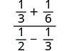 |
|
| Simplify the numerator and denominator. | |
| Find the LCD and add the fractions in the numerator. Find the LCD and add the fractions in the denominator. |
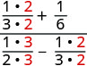 |
| Simplify the numerator and denominator. | 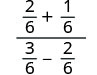 |
| Simplify the numerator and denominator, again. | 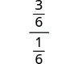 |
| Rewrite the complex rational expression as a division problem. | 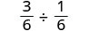 |
| Multiply the first times by the reciprocal of the second. | 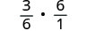 |
| Simplify. |
How to Simplify a Complex Rational Expression by Writing it as Division
Simplify:
Solution
Solution
![The above image has three columns. The image shows steps on how to divide complex rational expressions in three steps. Step one is to simplify the numerator and denominator. We will simplify the sum in the numerator and difference in the denominator for the example 1 divided by x plus 1 divided by y divided by x divided by y minus y divided by x. Find a common denominator and add the fractions in the numerator and find a common denominator and subtract the fractions in the numerator to get 1 times y divided by x times y plus 1 times x divided by y times x divided by x times x divided by y times x minus y times y divided by x times y. Then, we get y divided by x y plus x plus x y divided by x squared divided by x y minus y squared divided by x y. We now have just one rational expression in the numerator and one in the denominator, y plus x divided by x y divided by x squared minus y squared divided by x y.](../../media/CNX_ElemAlg_Figure_08_05_002a_img_new.jpg)
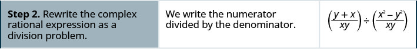
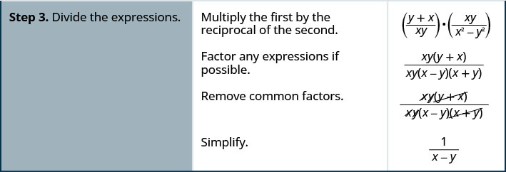
Simplify:
Solution
Solution
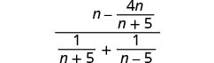 |
|
| Simplify the numerator and denominator. | |
| Find the LCD and add the fractions in the numerator. Find the LCD and add the fractions in the denominator. |
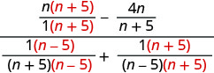 |
| Simplify the numerators. | 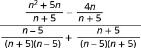 |
| Subtract the rational expressions in the numerator and
add in the denominator. Simplify. |
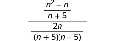 |
| Rewrite as fraction division. | 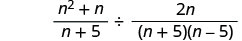 |
| Multiply the first times the reciprocal of the second. | 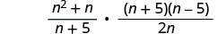 |
| Factor any expressions if possible. | 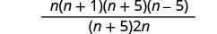 |
| Remove common factors. | 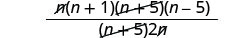 |
| Simplify. |
Simplify a Complex Rational Expression by Using the LCD
We “cleared” the fractions by multiplying by the LCD when we solved equations with fractions. We can use that strategy here to simplify complex rational expressions. We will multiply the numerator and denominator by LCD of all the rational expressions.
Let’s look at the complex rational expression we simplified one way in Example 2. We will simplify it here by multiplying the numerator and denominator by the LCD. When we multiply by we are multiplying by 1, so the value stays the same.
Simplify:
Solution
Solution
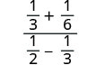 |
|
| The LCD of all the fractions in the whole expression is 6. | |
| Clear the fractions by multiplying the numerator and denominator by that LCD. | 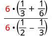 |
| Distribute. | 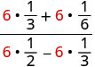 |
| Simplify. | 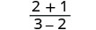 |
How to Simplify a Complex Rational Expression by Using the LCD
Simplify:
Solution
Solution
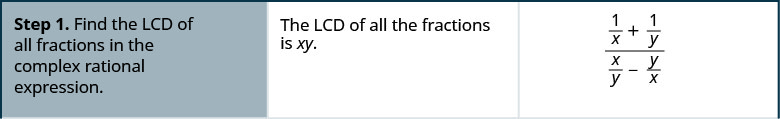
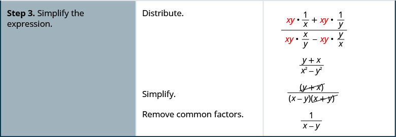
Be sure to start by factoring all the denominators so you can find the LCD.
Simplify:
Solution
Solution
| Find the LCD of all fractions in the complex rational expression. The LCD is . | |
| Multiply the numerator and denominator by the LCD. | 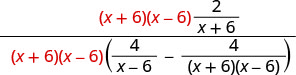 |
| Simplify the expression. | |
| Distribute in the denominator. | 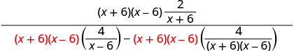 |
| Simplify. | 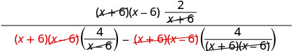 |
| Simplify. | |
| To simplify the denominator, distribute and combine like terms. | |
| Remove common factors. | |
| Simplify. | |
| Notice that there are no more factors common to the numerator and denominator. |
Simplify:
Solution
Solution
| Find the LCD of all fractions in the complex rational expression. The LCD is . | |
| Multiply the numerator and denominator by the LCD. | |
| Simplify. | 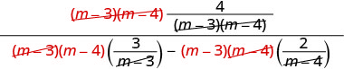 |
| Simplify. | |
| Distribute. | |
| Combine like terms. |
Simplify:
Solution
Solution
| Find the LCD of all fractions in the complex rational expression. | |
| The LCD is . | |
| Multiply the numerator and denominator by the LCD. | 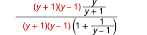 |
| Distribute in the denominator and simplify. | 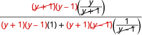 |
| Simplify. | |
| Simplify the denominator, and leave the numerator factored. | |
| Factor the denominator, and remove factors common with the numerator. | |
| Simplify. |
Key Concepts
-
To Simplify a Rational Expression by Writing it as Division
- Simplify the numerator and denominator.
- Rewrite the complex rational expression as a division problem.
- Divide the expressions.
-
To Simplify a Complex Rational Expression by Using the LCD
- Find the LCD of all fractions in the complex rational expression.
- Multiply the numerator and denominator by the LCD.
- Simplify the expression.
Practice Makes Perfect
Simplify a Complex Rational Expression by Writing It as Division
In the following exercises, simplify.
Solution
Solution
Solution
Solution
Solution
Solution
Solution
Solution
Simplify a Complex Rational Expression by Using the LCD
In the following exercises, simplify.
Solution
Solution
Solution
Solution
Solution
Solution
Solution
Solution
Solution
Solution
Simplify
In the following exercises, use either method.
Solution
Solution
Solution
Solution
Everyday Math
Electronics The resistance of a circuit formed by connecting two resistors in parallel is .
- ⓐ Simplify the complex fraction .
- ⓑ Find the resistance of the circuit when and .
Solution
ⓐ ⓑ
Ironing Lenore can do the ironing for her family’s business in hours. Her daughter would take hours to get the ironing done. If Lenore and her daughter work together, using 2 irons, the number of hours it would take them to do all the ironing is .
- ⓐ Simplify the complex fraction .
- ⓑ Find the number of hours it would take Lenore and her daughter, working together, to get the ironing done if .
Writing Exercises
In this section, you learned to simplify the complex fraction two ways:
rewriting it as a division problem
multiplying the numerator and denominator by the LCD
Which method do you prefer? Why?
Solution
Answers will vary.
Efraim wants to start simplifying the complex fraction by cancelling the variables from the numerator and denominator. Explain what is wrong with Efraim’s plan.
Self Check
ⓐ After completing the exercises, use this checklist to evaluate your mastery of the objectives of this section.

ⓑ After looking at the checklist, do you think you are well-prepared for the next section? Why or why not?